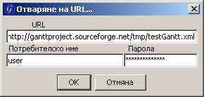

GanttProject - Отваряне/Запазване на интернет сървър
От версия 1.9.8 нагоре, GanttProject позволява изтеглянето на проект директно от интернет сървър.
Може да зададете URL на файла(и потребителско име+парола, ако е необходимо) и да работите по проекта. След това можете да запазите проекта на вашия компютър

На специален сървър, можете да изтегляте И да запазвате проекта директно от/на сървъра. Вашият сървър трябва да има за целта активиран WebDAV протокол.
На стандартен Apache интернет сървър не можете да работите по този начин.